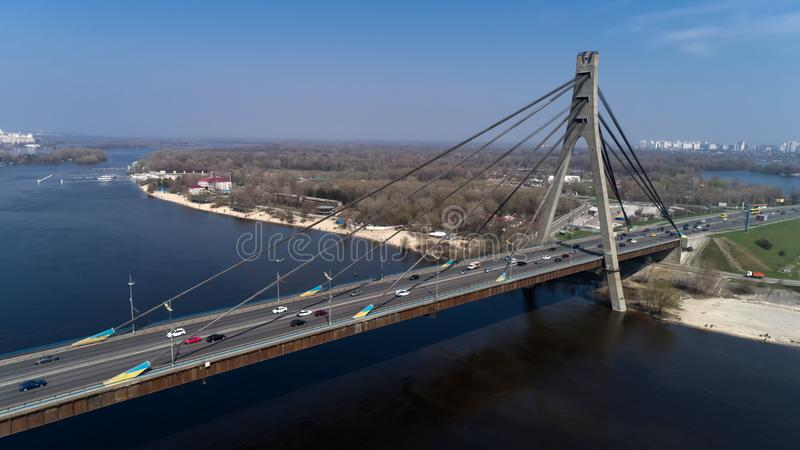
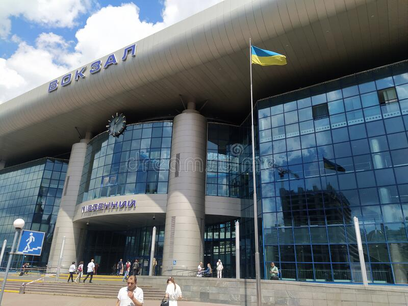
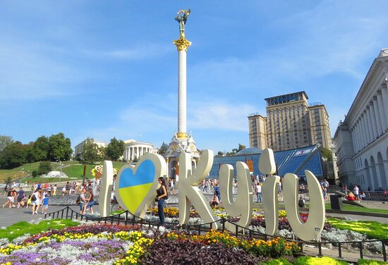
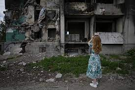
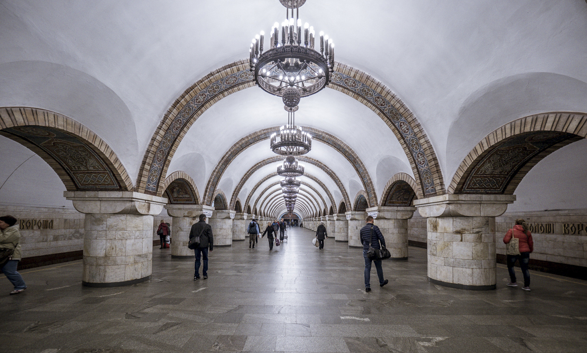
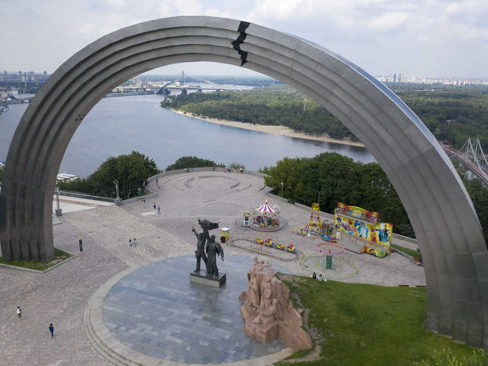
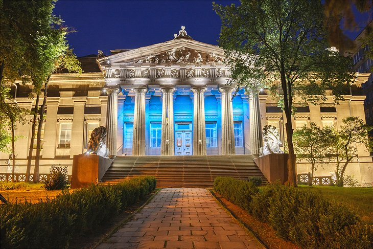
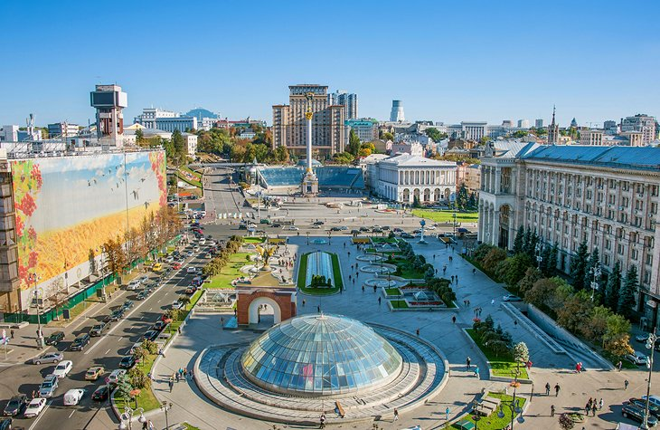
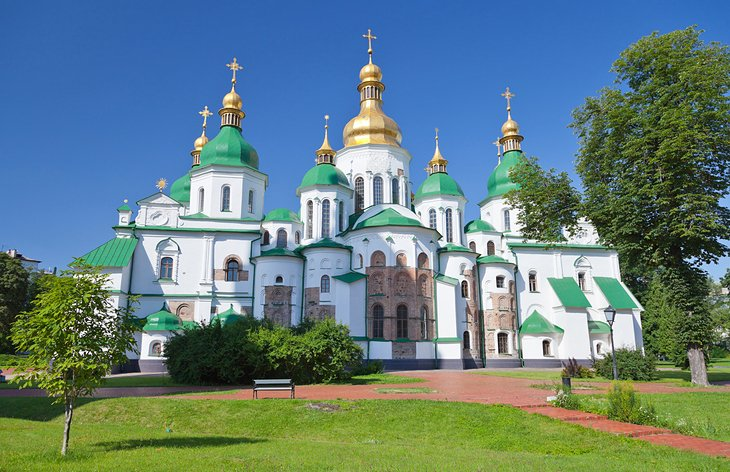

Kiev is the largest city in Ukraine with 2.8 million residents, more than in Paris
Residents
Its residents are called Kyivans or Kievan
Area
Its area is 839km² with a population density of 3,299 citizens per km²²
Make your trip !

North
5 844 €, per person
Visit the north of Kiev with its biggest bridge in the City !

South
97 455 €, per person
Do you like escape games? Then try out the Kiev police station! (only for experts)

East
500 €, per person and a heart in good condition
Kiev is also called the city of Love. Visit the Place of the Heart to try to find your S.O.
and/or to transplant a heart !

West
Your life
The west of Kiev is the best place for children ! They can play in the part of the city made
for them

Underground
85 € per month/person
Scared of beeing outdoors ? You can try the inside ! Kiev has one of the most beautiful
metro in the world !
In the sky
911 €
It is said that you often have your head in the clouds?
The history of Kiev
Kiev, also known as Kyiv, is the capital and largest city of Ukraine. It is located in the north central
part of the country, on the Dnieper River. The city has a long and rich history dating back to the 9th
century, when it was founded by the East Slavs as a trading center.
In the 10th and 11th centuries, Kiev became the capital of the Kievan Rus, a powerful medieval state that
played a significant role in the development of Eastern Europe. The city became a major cultural and
political center, and its rulers, the Grand Princes of Kiev, were influential figures in the region.
During the 13th and 14th centuries, Kiev experienced a period of decline as the Mongols invaded and
conquered the city. It was later annexed by the Polish-Lithuanian Commonwealth in the 16th century, and then
passed to the Russian Empire in the 18th century.
In the 20th century, Kiev played a significant role in the Russian Revolution and the Ukrainian independence
movement. The city was the site of the Ukrainian independence referendum in 1991, which resulted in the
country's independence from the Soviet Union.
Today, Kiev is a vibrant and modern city with a rich cultural heritage. It is home to numerous museums,
churches, and other cultural landmarks, and is a popular tourist destination in Eastern Europe.
Places of interest

Arch of Freedom of the Ukrainian people
Here is a list of 5 places to visit in Kiev, along with their prices: The Gold Coast Monastery (Монастир Золотая Горка), an 11th-century Orthodox monastery:
Free. Petersburg Castle Park (Петербургский замок), an 18th-century castle with a landscaped
park: Free. The National Museum of Ukrainian History (Національний Історичний Музей України), a museum
dedicated to Ukrainian history: 60 UAH (about €2.10).

The National Museum of Ukrainian History (Національний Історичний Музей України)
St Sophia Cathedral in Kiev (Київська Соборна Софія), an 11th-century cathedral with
frescoes and mosaics: Free, but there is a suggested donation of 50 UAH (about €1.75). Mount Metchkin (Мечкин Гора), a hill with a panoramic view of the city and a 17th-century
fortress: Free.
It is important to note that the rates listed are subject to change and may vary depending on the season.
I recommend that you check the rates before your trip to make sure you have the most up-to-date
information

One of the main plazza in Kiev

Temple of the Holy Spirit
About us
We are a group of 3 students from the University of Gustave Eiffel, France.
We are studying computer science and we are currently in our 2nd year.
We are doing this project for our english class.
We hope you enjoyed our website and that you will come to Kiev to visit us !